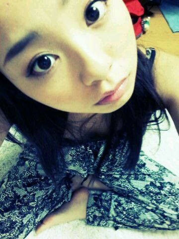
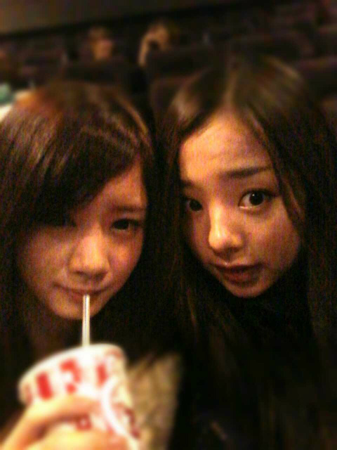

ほいっ♪ろってぃーです〃п〃)/

昨日は、せいたん♪と
映画館に行ってきましたWW
わ〜〜〜い*^п^*笑)))
ちなみに『宇宙兄弟』ですっ♪))
ま)「映画館に映画見に来るん
久々やなぁ〜♪」
せ)「もうここ2年位
きてなかったっち^ω^」
...
ま)「えっ、・Д・!
そこまで久しぶりではない...。」
久しぶりゆーても
今年なって、初めてとかや
ゆーねん〃^ω^〃笑
宇宙兄弟、
面白かったよ〜(*^^*)
感動しましたっ＼(^o^)／
その後は、土曜日の全握の
リハーサル♪でした、

そしてそして今日はっ★☆★))
久しぶりに
美容院に行ってきました
＼(^o^)／
すいて、長さも切った*・ω・*
久しぶりに
ダンも入れてみました〃^_^〃
今年の秋、
パーマあえたいなぁ〜*・ω・*
小さい頃は
パーマあててたからっ(⌒‐⌒)
ぢゃあまた更新しまぁ〜す♪
のし。